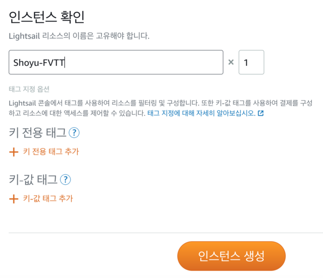

전용 서버 개설하기
⚠️ 리눅스 서버나 웹 호스팅에 익숙하지 않은 분들을 대상으로 작성했습니다.
ssh 클라이언트 등 별도 프로그램 설치나 리눅스 터미널 명령은 생소할 것이라 생각해 가능한 줄였습니다. 좀 더 일반적인 가이드는 Foundry Virtual Tabletop 커뮤니티 위키를 참고하시기 바랍니다.

먼저 Foundry Virtual Tabletop 공식 사이트에서 라이선스를 구매한 후 위와 같이 Node.js 버전을 다운로드합니다.
클라우드 컴퓨팅 서비스 선택
클라우드 컴퓨팅 서비스를 이용해 서버를 개설할 것입니다. 다양한 서비스가 있으나 이 가이드에서는 월 요금이 $3.5로 저렴하며 서울에 서버가 있는 AWS Lightsail을 예시로 다뤘습니다. 다른 서비스를 사용하는 경우에도 방식은 크게 다르진 않습니다.
먼저 AWS에 가입 후 콘솔에 로그인합니다.
서비스 목록에서 Lightsail을 선택합니다.

인스턴스 생성을 클릭하고 위치와 블루프린트를 확인합니다.
위치가 서울 외의 다른 지역으로 설정된 경우 (해외에 거주하시는 분은 가까운 지역으로 설정하시면 됩니다.) AWS 리전 및 가용 영역 변경을 클릭해 서울로 변경합니다.
블루프린트는 OS 전용에서 Ubuntu 18.04 LTS를 선택합니다.

인스턴스 플랜은 가장 저렴한 월 $3.5 플랜으로도 충분합니다.

원하는 명칭을 Lightsail 리소스 이름으로 지정한 후 인스턴스 생성 버튼을 클릭합니다.

잠시 후 생성된 인스턴스가 실행 중으로 표시되면 이제 이 인스턴스를 Foundry Virtual Tabletop 서버로 만들 차례입니다.
초기 설정
위의 인스턴스 칸에 있는 모양의 주황색 터미널 아이콘을 클릭하면 새 창에서 터미널이 열립니다.
다른 클라우드 컴퓨팅 서비스를 이용하는 경우에도 터미널을 연 후의 과정은 동일합니다.
위 이미지와 같이 터미널이 열리면 다음 명령어를 복사해서 붙여넣은 후 엔터 키를 누릅니다. 이는 서버 구축을 위해 필요한 프로그램 설치 및 설정을 자동화한 코드입니다.
bash <(curl -s https://raw.githubusercontent.com/ShoyuVanilla/FoundryVTT-docker-compose/master/install.sh)
입력하면 메시지가 여러 줄 뜨면서 각종 설치가 진행될 것입니다.
잠시 후 위와 같이 설치 과정에서 서비스 몇 가지를 자동으로 재시작할지를 묻는 메시지가 뜨면 왼쪽 방향키를 눌러 <Yes>를 선택한 후 엔터 키를 누릅니다.
설치가 완료되면 터미널에 다음 명령어를 입력한 후 엔터 키를 누릅니다.
start-foundry

정상적으로 진행된다면 위와 같이
Creating tinyfilemanager ... done
Creating foundryvtt ... done
이라는 메시지가 표시될 것입니다.
혹시 에러가 발생할 경우 터미널에 sudo su ${USER}를 입력한 후 엔터 키를 누르거나 터미널 창을 닫았다가 다시 연 후 재시도합니다.
파일 매니저 설정
start-foundry 명령어로 현재 서버에서는 Docker라는 플랫폼에서 파일 매니저와 Foundry Virtual Tabletop이 실행 중입니다.
그러나 이 가이드의 첫 부분에서 다운로드한 Foundry Virtual Tabletop을 아직 서버에 설치하지 않았기 때문에 현재 서버에서 돌아가는 Foundry Virtual Tabletop은 껍데기만 있는 상태입니다. 파일 매니저를 이용해 Foundry Virtual Tabletop를 서버에 설치할 것입니다.

다시 Lightsail 콘솔로 돌아가 인스턴스 칸의 햄버거 메뉴(콘솔 아이콘 옆의 점 3개)를 열어 관리 페이지로 들어갑니다.
관리 페이지의 네트워킹 탭에서 방화벽의 규칙 추가를 클릭해 위와 같이 8080번 포트를 여는 규칙을 생성합니다. 서버 자동 설정 코드에서 파일 매니저를 8080번 포트에서 실행하도록 설정했기 때문에 파일 매니저에 접속하려면 8080번 포트가 열려 있어야 하기 때문입니다.
IP 주소 항목의 퍼블릭 IP가 현재 서버의 IP 주소입니다. 이 주소와 포트 번호를 통해 파일 매니저에 접속할 것입니다.

인터넷 브라우저의 새 탭을 열어 주소 창에 <서버 IP>:8080을 입력한 후 이동합니다.
예시) 13.124.21.172:8080
위와 같이 파일 매니저 로그인 페이지가 열릴 것입니다.
사용자명 및 비밀번호의 기본 정보는 다음과 같습니다.
Username: admin
Password: admin@123
이 기본 정보로 로그인합니다.

위와 같이 현재 파일 목록이 나올 것입니다.
가장 아래에 있는 tinyfilemanager-config.json 파일을 열어 사용자명 및 비밀번호를 변경할 것입니다.
파일 이름을 클릭하면 상세 정보가 나타납니다. Edit 버튼을 클릭해 편집 모드로 들어갑니다.
기본적으로 "admin", "user" 두 개의 계정이 설정되어 있습니다.
"admin" 계정은 Foundry Virtual Tabletop 폴더 내의 모든 항목에 접근할 수 있는 관리자 계정입니다.
"user" 계정은 "userdir"에 지정된 값에 의해 데이터 폴더에만 접근할 수 있도록 제한해 둔 계정인데 다른 사람에게 서버를 빌려 줄 경우를 상정해 만들었습니다.
"username"과 "password" 항목을 담고 있는 중괄호 블록을 삭제해 계정을 지울 수 있고, 복사해서 붙여넣는 방식으로 새 계정을 추가할 수도 있습니다.
단, 중괄호로 묶인 부분은 쉼표(,)로 구분되어야 합니다.
위에서 강조 표시한 "username"과 "password" 항목을 수정할 것입니다.
전체 형식을 유지하면서 큰따옴표 안의 admin, admin@123, user, 12345 등을 원하는 값으로 지정해 계정 이름과 비밀번호를 변경합니다.
이 파일 매니저는 설치가 끝난 후에도 서버에 새 파일을 업로드하거나 백업을 위해 계속 사용할 것입니다. 초기 계정 이름 및 비밀번호를 그대로 두면 타인이 접속할 우려가 있으니 꼭 변경해 줍시다.
변경이 끝나면 Save 버튼을 클릭해 저장합니다.
Foundry Virtual Tabletop 설치
파일 매니저 초기 페이지에서 foundryvtt 폴더 이름을 클릭해 폴더로 이동합니다.
우측 상단의 Upload 버튼을 클릭하면 드래그 앤 드롭을 통해 파일을 업로드할 수 있는 페이지가 열립니다.
이 가이드의 첫 부분에서 다운받은 Foundry Virtual Tabletop 압축 파일을 끌어다 놓습니다.
업로드가 완료되면 다시 foundryvtt 폴더로 돌아가 업로드한 파일을 클릭합니다.
Unzip을 클릭하면 압축이 해제됩니다. Foundry Virtual Tabletop이 설치되었으니 이제 빈 껍데기뿐이었던 기존 컨테이너를 다시 시작할 차례입니다.
다시 터미널 창을 연 후
stop-foundry
를 통해 컨테이너를 중지한 후
start-foundry
를 통해 컨테이너를 다시 실행합니다.
인터넷 브라우저의 주소 창에 서버의 퍼블릭 IP를 입력한 후 위와 같이 라이선스 키 입력을 요구하는 페이지가 나오면 서버 구축이 완료된 것입니다.
서버가 재부팅될 경우에도 Foundry Virtual Tabletop과 파일 매니저를 자동으로 실행하게 설정해 두었으니 터미널을 열지 않고 인터넷 브라우저만으로도 편리하게 사용할 수 있습니다.
세션에 참여할 플레이어에게 이 서버의 퍼블릭 IP를 알려주면 인터넷 브라우저를 통해 서버에 접속할 수 있습니다. 보안을 위해 Foundry Virtual Tabletop Setup 페이지의 Configuration 항목에서 Administrator Password를 설정하실 것을 권장합니다.
파일 업로드 및 백업
파일 관리자에 접속합니다.
Foundry Virtual Tabletop 데이터가 저장되는 폴더는 foundryvttdata 입니다.

foundryvttdata 폴더 아래에는 Config, Data, Logs 폴더가 있습니다.
Config 폴더는 라이선스 및 Foundry Virtual Tabletop 기본 설정이 저장되는 폴더이며, Logs 폴더는 서버 구동 중에 발생한 로그(인게임 채팅 로그와는 무관)나 에러 등이 저장되는 공간입니다.
업로드 및 백업을 위해 신경써야 할 하는 폴더는 Data 폴더입니다.
Foundry Virtual Tabletop에서 이미지나 음원 등을 불러올 때 내부 파일 탐색기로 접근할 수 있는 파일은 이 Data 폴더 아래에 있는 파일 및 폴더에 한정됩니다.
따라서 게임에 쓰기 위한 멀티미디어 파일을 업로드할 때에는 Data 폴더나 그 하위 폴더를 이용해야 합니다.
Data 폴더 아래에는 modules, systems, worlds 폴더가 있습니다.
modules 폴더에는 Foundry Virtual Tabletop에 설치한 모듈이 저장되며 systems 폴더에는 D&D, 던전월드 등의 게임 시스템이 저장됩니다.
플레이어 및 캐릭터, 지도, 채팅 기록 등은 worlds 폴더 아래에 저장됩니다.
그러나 캐릭터의 초상화나 토큰 이미지 등이 worlds 폴더 외부에 있을 수 있으니 가급적이면 Data 폴더를 통째로 백업하는 것이 좋습니다.
위와 같이 Data 폴더를 통째로 압축해서
PC로 다운로드할 수 있습니다. 서버를 옮기거나 서버에서 플레이하던 캠페인을 PC로 옮기는 경우 이 파일의 압축을 해제해 Foundry Virtual Tabletop의 Data 폴더에 덮어씌우면 데이터를 유지할 수 있습니다.
서버 도메인 및 HTTPS 보안 설정 (선택사항)
서버의 퍼블릭 IP는 기억하기 어렵기도 하고 전용 주소가 있는 것이 그럴듯하기 때문에 서버에 도메인을 설정하는 경우가 많습니다. 도메인 구입 및 할당 방식은 인터넷에 잘 나와있으므로 여기서 다루지는 않을 것입니다.
다만 서버에 도메인을 할당할 경우 이왕이면 SSL 인증을 통해 HTTPS 보안 설정까지 하는 것이 좋을 것입니다. 손쉽게 SSL 인증을 하는 법을 소개합니다.
먼저 Foundry Virtual Tabletop과 파일 매니저에 할당할 두 개의 서브도메인을 생성한 후 둘 모두 서버의 퍼블릭 IP로 연결합니다.
파일 매니저에 접속해 docker-compose-https.override.yml 파일을 편집합니다.

DOMAINS 부분의 foo.bar.com과 foo.baz.com 부분을 각각 Foundry Virtual Tabletop과 파일 매니저의 서브도메인으로 변경한 후 저장합니다.

다시 Lightsail 인스턴스 관리 페이지의 네트워킹 탭에서 규칙 추가를 클릭합니다. 애플리케이션 드롭다운 메뉴에서 HTTPS를 선택해 HTTPS 접속에 쓰이는 443번 포트를 개방하는 규칙을 생성합니다. 기존에 열어 두었던 8080번 포트는 이제 사용하지 않으니 규칙에서 삭제합니다.
터미널 창을 열고
stop-foundry
를 통해 실행 중인 컨테이너를 중지한 후
start-foundry-https
를 통해 HTTPS 설정으로 다시 실행하면 SSL 설정이 완료됩니다.
중지 명령어는 stop-foundry-https입니다.
⚠️ SSL 설정 후 접속이 되지 않을 경우, 이는 DNS 정보가 Let’s Encrypt의 DNS 서버까지 퍼지지 않아서일 수 있습니다. 새로 서브도메인을 생성하거나 변경한 후 얼마 지나지 않은 경우 이러한 일이 발생합니다. 몇 시간 ~ 최대 이틀 뒤에 다시
start-foundry-https명령어로 재시도하십시오.